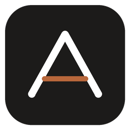
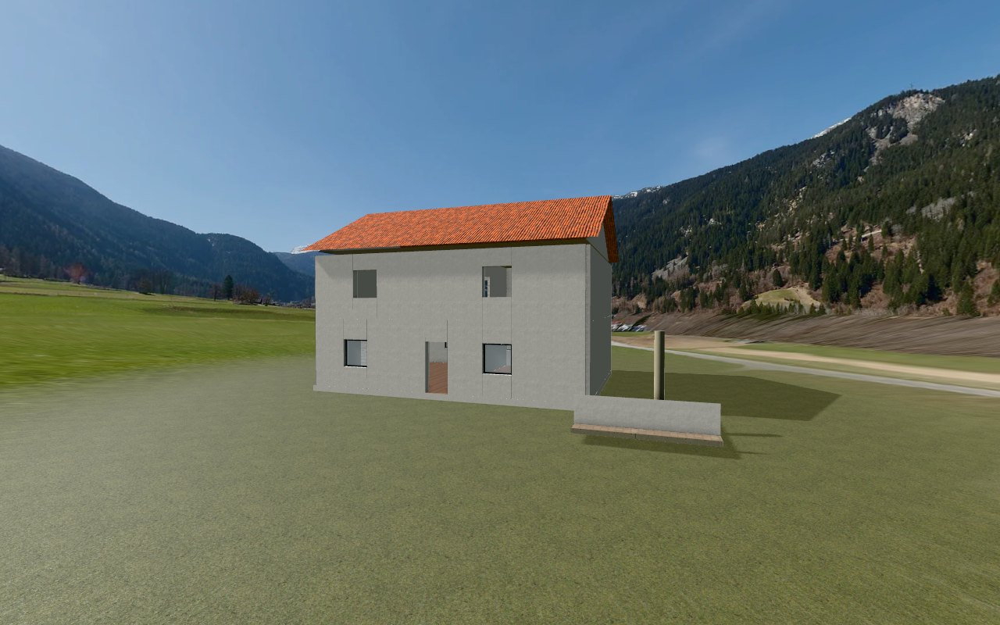

ARCHVISTADXF aus AutoCAD hineinziehen – ARCHVISTA erkennt Geschosse und Räume, setzt das Gebäude in eine fotorealistische Umgebung und veröffentlicht eine fertige Website. In wenigen Minuten, ohne Vorkenntnisse.
Kostenlos herunterladen
Auf „Kostenlos herunterladen“ klicken.
Die Datei ARCHVISTA-Setup.exe öffnen. Keine Administratorrechte nötig.
ARCHVISTA über das Symbol auf dem Desktop oder im Startmenü öffnen – oder einfach eine .dxf doppelklicken.
3D-Flächen, Netze, Blöcke, Layer und Einheiten – ohne Umwandeln.
Echte Foto-Umgebungen (Stadt, Natur, Küste, Studio), Licht, Schatten und fast 50 Materialien.
Wie in einem Spiel mit W A S D, Treppen und Kollision – am Computer und am Handy.
Räume sperren oder komplett aus der Website entfernen.
PDFs, DWGs und ganze Ordner zum Herunterladen anbieten.
Kostenlos über GitHub veröffentlichen. Updates kommen automatisch.